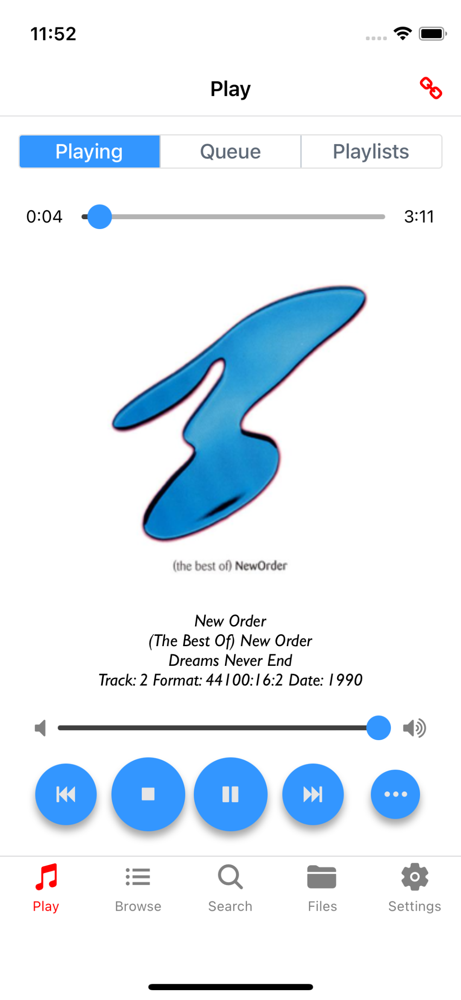
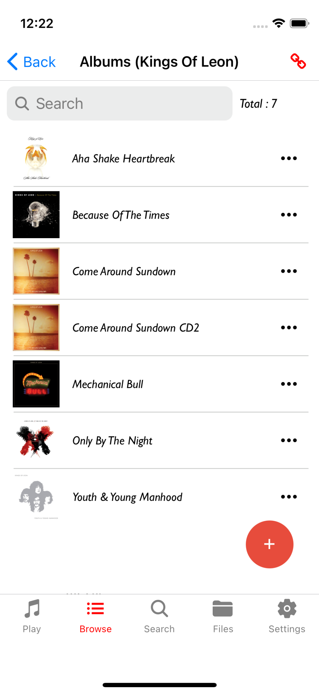
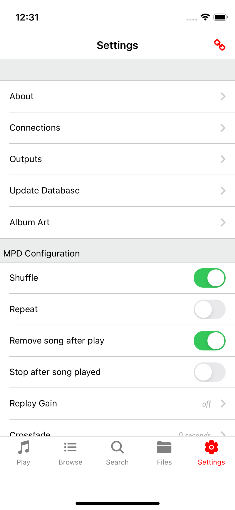

Maximum MPD
React Native based MPD Client for iOS
Welcome
Playing
Browse
Search
Files
Settings
Creating Playlists
Usage Guide
Maximum MPD is a full function MPD Client for iOS
Features:
- Random Playlist generation
- Multiple connections
- Server Discovery via Bonjour
- Artist, Album and Song Browser
- File Browser
- Quickly search for artists, albums and songs
- Output Selection
- Quickly create and edit playlists
- AlbumArt support if MPD version >= 0.21
Requirements:
An MPD Server running in your home network. See http://www.musicpd.org for more details
Welcome Screen
This is the initial screen when first loading the App. You can connect to configured or discovered MPD servers or add new ones/delete existing ones
Play Screen
The Play Screen has 3 tabs:
- Currently Playing Song (change the volume, change the song position and play/pause, stop, previous and next commands)
- Queue Management (control the selected song, create a random playlist of 50
- Playlist Management (view edit and create playlists)
Playing:
Playing Queue:
PlayLists:
Browse Screen
Drill down into Artists, Albums and Songs and add them to the queue or a playlist
Artists:
Albums:
Songs:

Search Screen
Search for Artists, Albums and Songs
Search:

Files Screen
Drill down into the files found in the MPD database
Files:
Settings Screen
Select different connections and other MPD settings such as Outputs, Album Art, Shuffle, Repeat etc
Settings:
Creating Playlists
Playlists can be added to when browsing songs or files. If there is no currently active playlist set you will be prompted to create one.
Alternatively you can select an existing one in on the Playing screen using the "Set Active" button.
Playlist Details screen:

Setting the Playlist name:

Add songs to the queue or active playlist by swiping left: